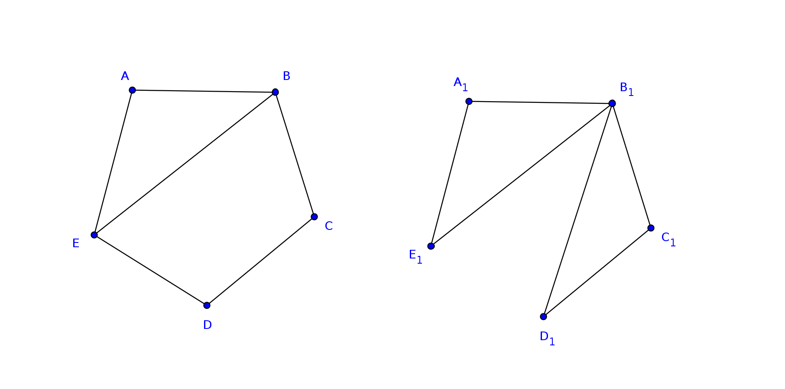

Overview
This week we will finish Chapter 1: Logic and Proofs and begin Chapter 2: Graph Theory.
Friday, March 7th
Test Review
We'll begin class by reviewing the results of Wednesday's test. The grade distribution was: A: 9, B: 8, C: 4, D: 5, and E: 5. That is an improvement over last time, but I'll share a few ideas I have about how we can improve on it still further going forward.
Our good friend José Ejemplo has kindly shared his solutions, which we can use as a guide in our discussion.
Things from the test that we should pay special attention to:
-
$ ttg_cli.py "['P', 'Q', 'R']" -p "['~(~P => (Q and R))', '~P and (~Q or ~R)']" -i False +-------+-------+-------+----------------------+---------------------+ | P | Q | R | ~(~P => (Q and R)) | ~P and (~Q or ~R) | |-------+-------+-------+----------------------+---------------------| | True | True | True | False | False | | True | True | False | False | False | | True | False | True | False | False | | True | False | False | False | False | | False | True | True | False | False | | False | True | False | True | True | | False | False | True | True | True | | False | False | False | True | True | +-------+-------+-------+----------------------+---------------------+
Anyone who got this first question wrong on the test is probably still struggling with the following relationship:
P => Qis logically equivalent to~P or QYou need to commit this to the very essence of your being, so that you just know it!
-
The main tools you have when writting a proof are:
- definitions
- propositions
- specific givens
We'll talk about how each of these are used in the proof on the test. We'll also highlight alternative approaches to a given proof, with Gabriel C.'s proof for problem 2 using a set theory instead of alegraic argument as an example, which José has kindly reproduced for us here
Introducing Graphs
Let's start with a discussion of the three Reading Questions at the end of the section.
Is there more than one graph with 5 vertices and 6 edges?
When working with graphs, we need to understand what it means to
be a graph
. The definition of graph is:
An ordered pair G = (V, E) consisting of a nonempty set V (called the vertices) and a set E (called the edges) of two-element subsets of V.
Graphs are equal when V and E are equal, but when we talk about
more than one graph
we are interested in the concept of
isomorphism:
An isomorphism between two graphs G1 and G2 is a bijection f: V1 -> V2 between the vertices of the graphs such that {a, b} is an edge in G1 if and only if {f(a), f(b)} is an edge in G2.
I want to draw your attention to the fact that isomorphism is an equivalence relation, which means it is reflexive, symetric, and transitive. When we ask if two graphs are the same, we are usually asking if they are isometric.
In this first reading question, we are really asking is: Is there more than
one isomorphism class with 5 vertices and 6 edges?
Take a look at this:

Well, what do you think?
A graph with 10 vertices of degree 4 has how many edges?
The answer to this question is a straight up application of the Handshake Lemma. So what is it?
Homework
Complete all Practice Problems and as many Additional Problems from Section 2.1: Problems and Definitions as time enables. Come to class on Tuesday prepared with questions on any problems that give you pause.
Wednesday, March 5th
Classwork
We will have a test today on Chapter 1: Logic and Proofs.
Homework
Read section 2.1: Graph Theory: Problems and Definitions. Spend some time thinking about the famous Seven Bridges of Königsberg problem presented at the beginning of the chapter.
Monday, March 3rd
Classwork / Homework
We'll begin class by discussing any questions you have from the exercises assigned last Thursday. You'll have the rest of class and homework time to continue working exercises from the lists below.
Prepare a single sheet of 8 1/2 by 11 inch paper, front and back, with notes you can use on Wednesday's test. I recommend you include the definitions and propositions presented in the chapter.
Blu's List
Here is the promised Blu's list for the test on Wednesday:
Section 1.5: Proofs about Discrete Structues
- Practice Problems: 1 through 5
- Additional Exercises: 1 through 12
Section 1.6: Chapter Summary
- Chapter Review: 1 through 7, 8a, 9 and 10
Be sure you are comfortable generating truth tables, and can do the kinds of proofs presented in the examples and exercises, which means being able to use the definitions and propositions effectively. Having these handy on your 8 1/2 by 11 inch resource sheet will be most useful to you.